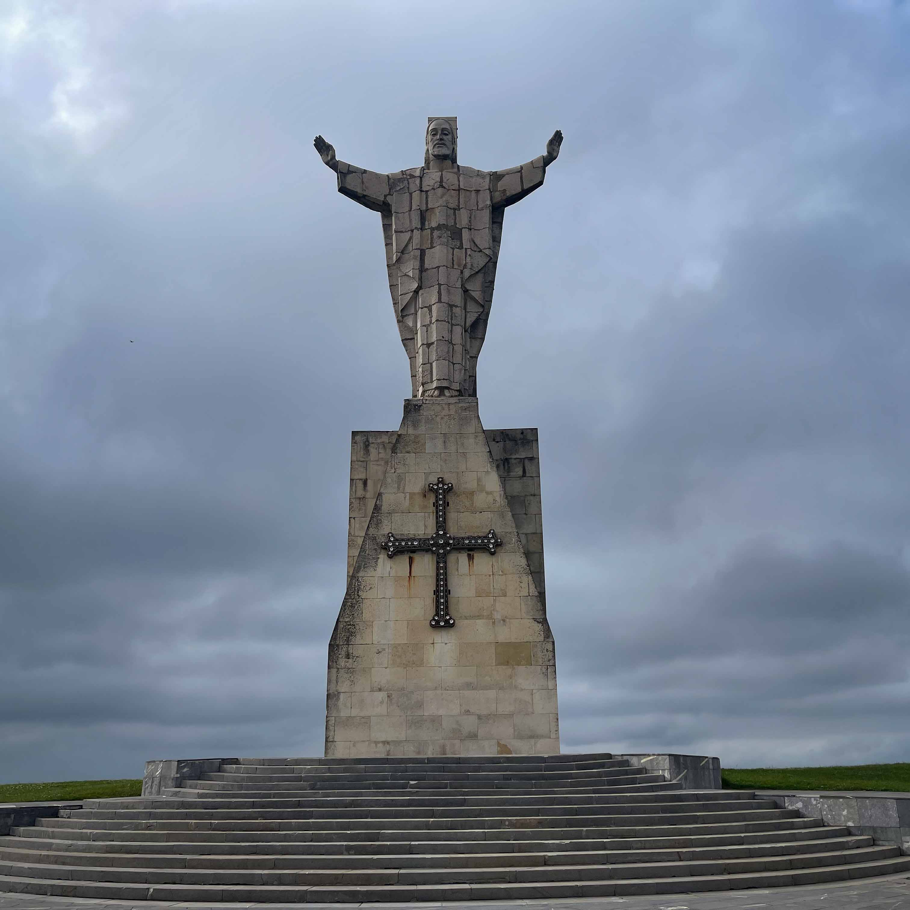
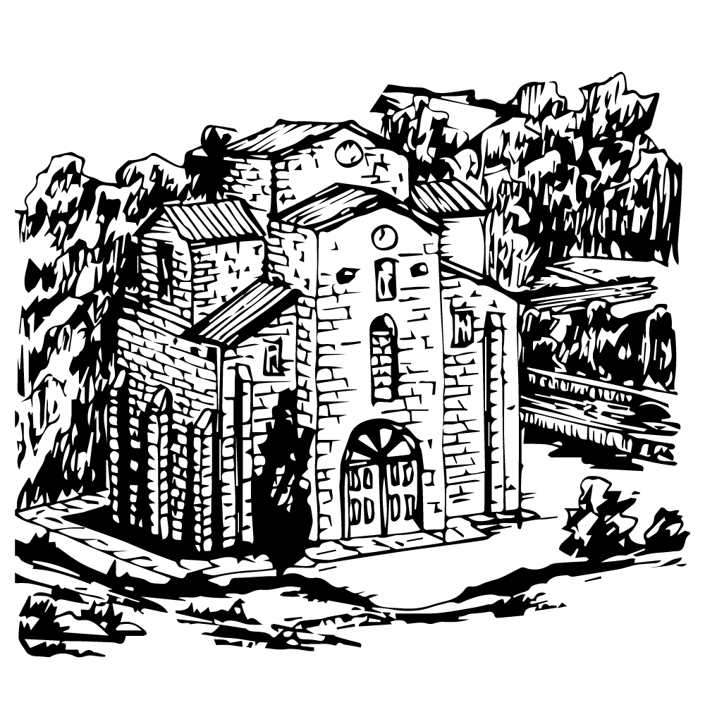
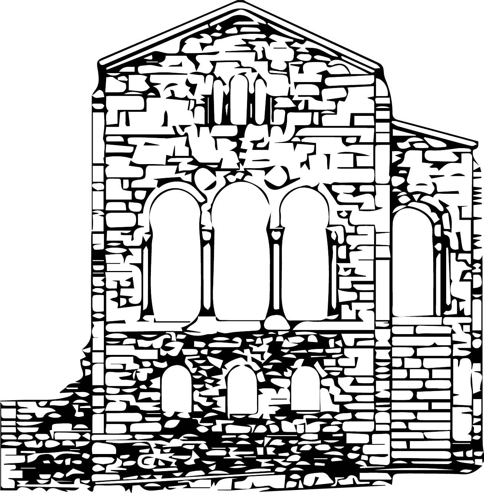
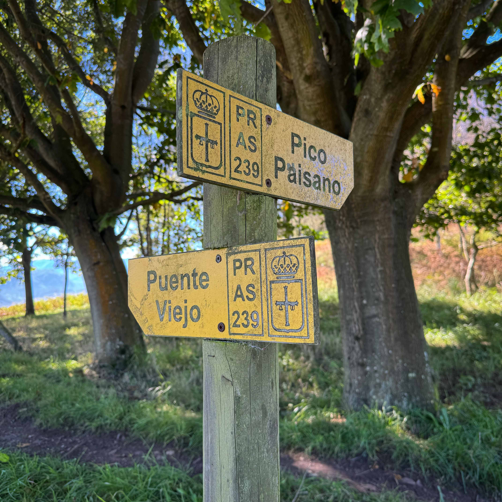
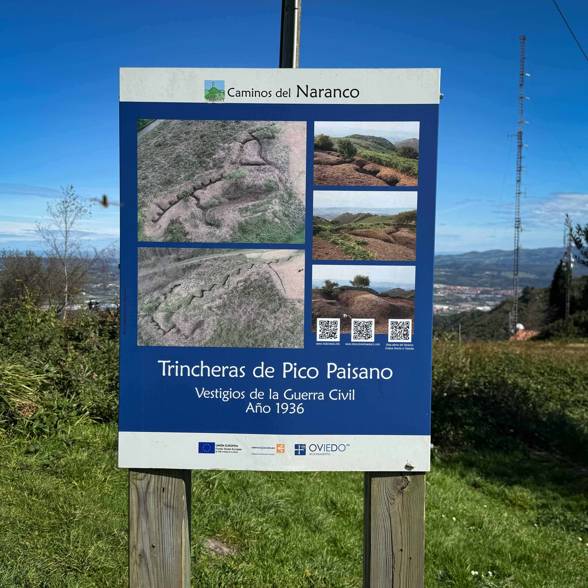
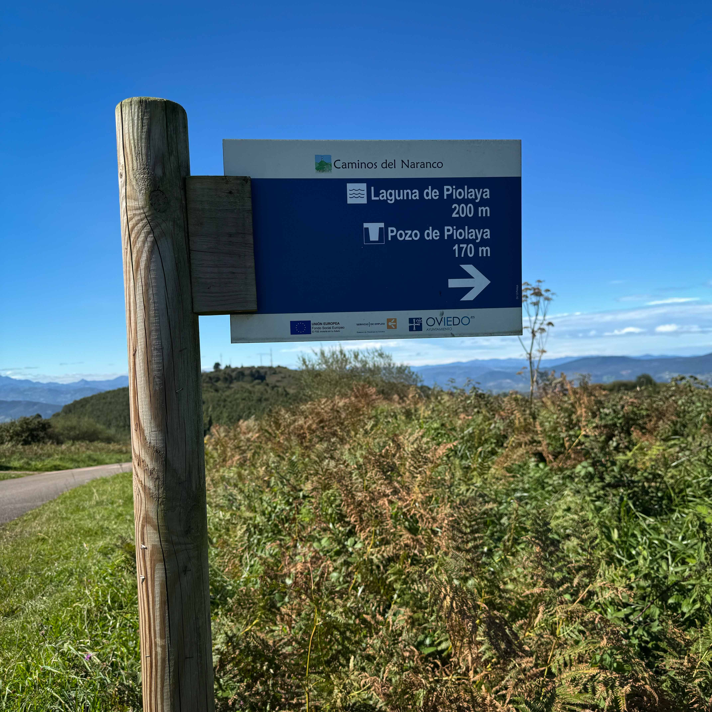

Vídeo del Monte Naranco que ofrece una vista panorámica de 360º desde el punto de grabación.
Vídeo del Monte Naranco con vista en 360º
Monte Naranco cada paso se llena
.png) de historia y belleza
de historia y belleza
Estas rutas ofrecen una combinación de naturaleza, historia y cultura, haciendo del Monte Naranco un lugar perfecto para explorar y disfrutar.
Desde las rutas más populares, como la senda de los "Neveros", la ruta de "San Miguel de Lillo" y la de la "Fuente de los Pastores", hasta los lugares de interés más importantes como "Santa María del Naranco", "San Miguel de Lillo" y el "Lavadero del Naranco".
¡Explorar este monte es una aventura que revela el alma de Oviedo!
Recorridos

Desde Purificación Tomás
Por los Monumentos
Circular al Naranco
Otras rutas
Duración

+ de 3 horas
+ de 3 horas
+ de 5 horas
+ ó - 3 horas
Ubicación

43º 23' 00"N
5º 52' 00"W
Vértice
.png)
11.000 vértices en España
Posición geográfica
Red de triangulación

Recorrido
Salimos del Parque Purificación Tomás en el barrio de Vallobín. Un sendero a la izquierda nos lleva hasta la localidad de Ules.
Seguimos por un tramo de carretera hasta la parte alta próxima a Brañes. Girando a la derecha, el sendero nos lleva a la cima de la Llampaya.
Una pista por la parte sur de la sierra nos llevará al Picu Paisanu 637 m. Por el camino encontraremos búnkeres reformados de la guerra.
Desde la cima, las vistas del Aramo y Oviedo son únicas. Puede verse la cordillera Cantábrica un día despejado.
A la vuelta te encuentras con Santa María del Naranco y San Miguel de Lillo. El descenso puede ser por carretera.

Explora las Otras Zonas Verdes de Oviedo

Descubre tu refugio natural en Oviedo, explora los diversos oasis y remansos de paz que la ciudad tiene para ofrecer.
Al igual que en los parques, en estas zonas verdes podrás encontrar Naturaleza | Deporte | Bienestar.

Al Cristo
( Picu Paisanu)
Por la Avenida de los Monumentos

La subida comienza en la Avenida de los Monumentos por la falda de la colina, entre una zona residencial.
A partir de ahí, la naturaleza empieza a tomar el mando.
Continúas y te encuentras primero con Santa María del Naranco y un poco más arriba con San Miguel de Lillo.
Son los monumentos prerrománicos, Patrimonio Mundial de la Humanidad (diciembre de 1985).
Ya solo queda seguir hacia la cima del Monte Naranco y llegar al Sagrado Corazón.
Su mirador tiene la mejor panorámica de la ciudad de Oviedo, en un día claro se puede ver la costa.
Monte Naranco desde La Corredoria

Este recorrido circular que comienza en La Corredoria nos llevará más de tres horas. Desde allí, se sube por la depuradora de Villapérez y siguiendo la senda, se llega hasta el puente de Gallegos.

A la derecha de la Pista Finlandesa, un sendero llano nos conduce a unas canteras abandonadas. Al ascender, pasamos por los antiguos cuarteles y llegamos a la carretera del Naranco.

Siguiendo la senda, alcanzamos el área recreativa del Naranco. Antes de la última subida al Picu Paisanu, podemos tomar un camino que desciende hasta un pozo y una laguna. Retomando el camino anterior, llegamos al Cristo.

Para la vuelta, al llegar al área recreativa, se nos indica el camino a San Miguel de Lillo. Tras pasar por los monumentos, seguimos la carretera, volvemos a la Pista Finlandesa y de ahí regresamos a La Corredoria.
Historia
Monte Naranco fue un lugar disputado durante la guerra del 36 por los dos bandos debido a su posición estratégica, por su cercanía a la capital y por su situación elevada.
De estas luchas han quedado las trincheras en zigzag, los nidos de ametralladoras, restos de fusilerías y conjuntos defensivos para mantener las posiciones nacionales y republicanas.
 Ruta de las
Trincheras
Ruta de las
Trincheras
Desde el barrio de Ciudad Naranco, ascenderemos
hasta San Miguel de Lillo. Continuaremos hacia la Fuente de Los Pastores hasta llegar al
Picu
Paisanu. Tras lo que iniciaremos
el descenso con dirección a la Pista Finlandesa.
A lo largo de la ruta vemos:
Los Monumentos Prerrománicos de Santa María del Naranco y San Miguel de Lillo, Lavadero
Entrerregueros, Mina Pastora, Trinchera, Picu Paisano, Calero del Prau Santiago y Lavadero
del Naranco.
 La Senda Cama´l Moro
La Senda Cama´l Moro
Desde el aparcamiento de Ules, pasamos por La
Contriz, PR AS-239, por los búnkeres de la Cama´l Moro, neveros del Pevidal y
Picu Paisanu, seguimos por Peña El Fuello, San Miguel de Lillo, por encima del Centro
Asturiano y de nuevo a Ules.
A lo largo de la ruta vemos:
Los árboles autóctonos nos acompañan a dos nidos de ametralladoras republicanas que
controlaban
la ladera Norte de La Peña y del Pevidal, están cerca los neveros y
se pasa por el Cristo y los monumentos.
.png)
El comercio de la nieve
La comercialización del hielo parece algo relativamente moderno pero la fabricación de hielo comprende una industria milenaria. La actividad de los neveros artificiales tienen su gran desarrollo entre los siglos XVI y XIX, y ha sido utilizada hasta mediados del s. XX cuando aparecen los primeros frigoríficos. El aprovechamiento de la nieve fue la base para un trabajo y una profesión que pervivió hasta aproximadamente 1931.
En la cara norte del Picu Paisano, se encuentran los restos de cuatro pozos de nieve. Situados a una altura aproximada de 600 metros sobre el nivel del mar y agrupados en parejas, dos de ellos se encuentran en el Pevidal y otra pareja en La Vara, quedando en desuso, cuando aparecieron las primeras fábricas de hielo. Abastecían de hielo a farmacias, hospitales y algunos comercios de Oviedo y alrededores.
La senda de los neveros
Subida al Monte Naranco desde el Barrio de Vallobín
(Oviedo). Se puede acceder desde la zona de Loma del Canto y Pista Finlandesa, Constante, Santa
María del Naranco, San Miguel de Lillo, Picu Paisano, La Contriz, Ules, Purificación Tomás y
Vallobín.
A lo largo de la ruta vemos:
Los monumentos prerrománicos, las trincheras, el Sagrado Corazón, los neveros y varios
barrios de
Oviedo.
.png) Fuente de los pastores
Fuente de los pastores
Comenzamos en el aparcamiento de los
Monumentos,
para ascender hasta San Miguel de Lillo. Desde ahí, continuamos a la Fuente de los
Pastores.
Regresamos rodeando el Centro Asturiano.
A lo largo de la ruta vemos:
La Capilla de Ules, Mina Gorgota, Pico La Peña, también llamado Peña Llampaya, que nos
ofrecerá una maravillosa vista panorámica.
.png) Peña Llampaya
Peña Llampaya
Iniciamos la ruta desde el aparcamiento de
Ules, por la Capilla
de
San Isidro Labrador. Continuamos hasta la Mina Gorgota, llegamos a la Peña Llampaya y de
ahí
regresamos al punto de inicio.
A lo largo de la ruta vemos:
Santa María del Naranco y San Miguel de Lillo, Nidos de ametralladoras, Neveros del
Pevidal,
Fuente del Canto y Laguna de Piolaya.
Descubre
Santa María
Palacio de Ramiro I en la falda del monte Naranco. Tiene planta rectangular y está dividido en dos pisos. Al inferior se accede por el exterior y es una cripta totalmente cerrada, el superior es diáfano con miradores. Los une una escalera exterior.
San Miguel de Lillo
Dedicada al arcángel San Miguel fue construida con planta de tres naves. Actualmente de ella se conserva el vestíbulo y el inicio de sus naves. Destaca la decoración escultórica en relieve.
 El Cristo
El Cristo
Monumento al Sagrado Corazón de Jesús, en la cima del monte Naranco, en la ciudad de Oviedo. Recrea una imagen de Jesús con los brazos abiertos como símbolo de protección. Se tardaron dieciocho años en finalizar el proyecto, comenzó en 1963 hasta el 1981.
Santa María
Santa María
Palacio de Ramiro I en la falda del monte Naranco. Tiene planta rectangular y está dividido en dos pisos. Al inferior se accede por el exterior y es una cripta totalmente cerrada, el superior es diáfano con miradores. Los une una escalera exterior.
San Miguel

San Miguel
Dedicada al arcángel San Miguel fue construida con planta de tres naves. Actualmente de ella se conserva el vestíbulo y el inicio de sus naves. Destaca la decoración escultórica en relieve .
El Cristo

 El Cristo
El Cristo
Monumento al Sagrado Corazón de Jesús, en la cima del monte Naranco, en la ciudad de Oviedo. Recrea una imagen de Jesús con los brazos abiertos como símbolo de protección. Se tardaron dieciocho años en finalizar el proyecto, comenzó en 1963 hasta el 1981.
Sobre Nosotros
Somos un equipo de desarrolladores web dedicados a crear experiencias únicas.
Nos
esforzamos por transformar la visita a los parques por excelencia de Oviedo en experiencias
digitales visualmente atractivas, intuitivas y fáciles de usar.
© Copyright 2025.
Todos los derechos reservados.